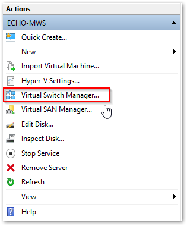
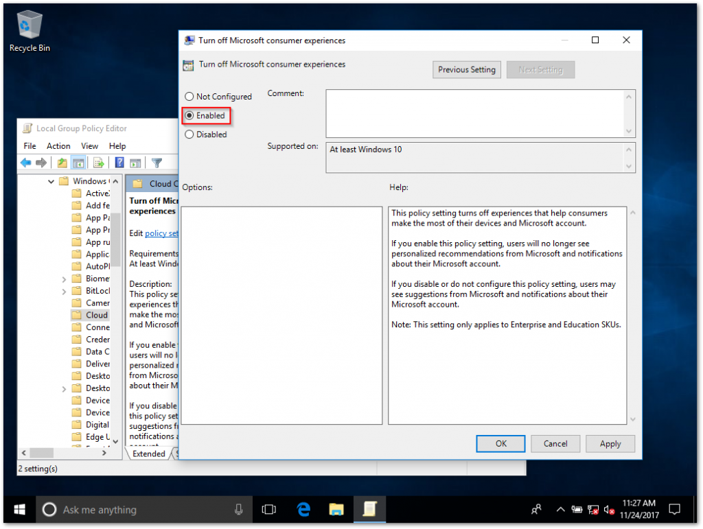
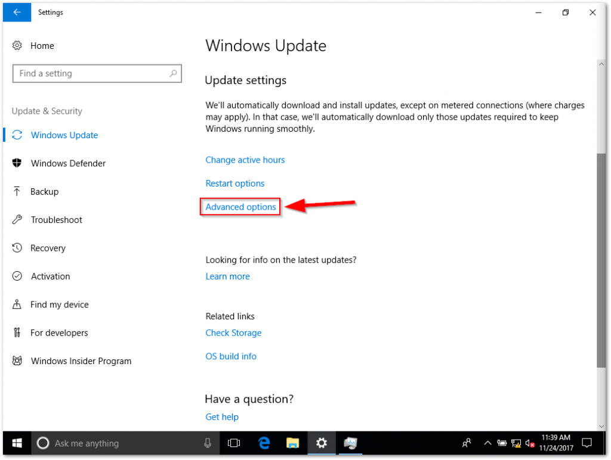
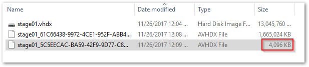

Creating Customized Windows 10
https://finalthought.org/2018/01/11/creating-customized-windows-10-version-1709-media-iso-wim-flash-drive/
- Download the Windows ISO for which you are creating custom media.
- Download the Windows ADK (Assessment and Deployment Kit) for Windows 10 from here.
Preparing your environment
-
Open the Windows ADK for Windows 10 installer.
-
- Select and install
**Deployment Tools** and **Windows Preinstallation Environment (Windows PE).**
-
- Enable the Hyper-V Platform and reboot the host.
To do this, at your desktop type **Win+X** and click **Apps and Features** at the top.
-
Select Programs and Features within the settings window
-
Select Turn Windows features on or off
-
Select Hyper-V and Click OK. When prompted, click Restart now.
-
Once rebooted, open the Start Menu and type “Hyper” > Open **Hyper-V Manager **
-
Select your host (computer name) on the left and then click Virtual Switch Manager… (on the right)

-
Select New virtual network switch on the left and External under the type to create. Click Create Virtual Switch.
-
Name the switch something appropriate (I’m using “Main”).
-
Select External Network > Select your main NIC (wireless or wired).
-
Check Allow management operating system to share this network adapter and click OK.
-
Click Yes on the notice prompt.
Create the Staging VM
-
Now that you’re prepped, within Hyper-V Manager select New > Virtual Machine and then click Next.
-
Type a name for your staging VM (I’m picking stage01) then click Next.
-
Select Generation 2 and then click Next.
-
Enter an appropriate amount of memory (I’m entering 8192 MB), UNselect Dynamic Memory and then click Next.
-
Choose Not Connected for the Connection page (this will prevent Windows 10 from downloading / installing “consumer apps” during initial staging)
-
Designate an adequate amount of storage for your VM (not less than the total GB of all applications you will be installing) and then click Next.
-
Select Install an operating system from a bootable image file > Select Image File (.iso) > Find and select the Windows ISO you downloaded earlier > Click Next > Click Finish.
-
Back at the Hyper-V Manager, right click stage01 and select Connect…
(This will open the console of the VM.)
-
Click Start within the VM window
-
Press any key to initiate the Windows Setup
-
I’m installing Windows 10 Enterprise (your experience may differ if you’re using something else!)
-
Install Windows 10 by accepting the EULA and choosing Custom > selecting the entire virtual disk and clicking Next.
Enter Audit Mode and Install Applications
-
Once you’re presented with the Region screen (where you select the country) – STOP.
-
Enter CTRL+SHIFT+F3.
-
Windows will reboot and log you in with the Administrator account.
-
When presented with the System Preparation Tool window, click Cancel.
As established in my previous articles, Audit Mode is my favorite choice of creating customized Windows install media. If you are unaware, Audit Mode bypasses OOBE and negates the need of creating a new user account, thus assigning a “Registered Owner” name.
Now that we’re in Audit Mode, the first step I do (and recommend!) is disabling the “Consumer Experience” via GPO.
The “Consumer Experience” is the default mode Windows 10 (including Enterprise) is shipped with. This mode, upon initial login of a new user, commences the automatic download of a plethora of (unrequested) UWP apps, thus filling the start menu with games like Candy Crush. I deplore this feature beyond anything Microsoft has done in the past. It cheapens the Windows experience and frankly, I think they should be embarrassed that this is included in their flagship product. Fortunately, this feature can be disabled – but only on Enterprise edition.
To disable this “feature”, open up the Local Group Policy Editor (gpedit.msc) and navigate to Computer Configuration > Administrative Templates > Windows Components > Cloud Content and double click Turn off Microsoft consumer experiences. We will want to Enable this GPO and click OK.

At this point, we can now (safely) enable the Network Interface on this VM.
- Navigate to File > Settings.. and select Network Adapter on the left.
- Change the “Virtual Switch” from Not Connected to (in my case) Main. Click OK to save your changes.

Running Windows Update
So, just as you would do normally, lets jump into the Settings app > Navigate to Update & Security and run Check for updates.
While updates are downloading / installing – I personally like to take this opportunity to tweak a few Windows Update settings. These include:
-
Navigating to advanced options and enabling “Give me updates for other Microsoft products when I update Windows”.

-
Scroll down and select Delivery Optimization
-
Turning ON the feature Allow downloads from other PCs and setting it to PCs on my local network
-
Back at the main Windows Update page, I select Restart Options under Update Settings
-
And within Restart Options I always select On under Show more notifications
At this point of the how-to, I’ve had the opportunity to tweak my Windows Update settings to my liking and Windows was ready to restart.
Upon restart (and installation of the latest Cumulative Update), Windows will automatically log you back into Audit Mode (make sure to click cancel on the sysprep popup again!).
After logging in, double check to confirm that all updates have been installed.
After confirming the OS is fully up to date, now is the time to make any tweaks and install all applications that you want embedded into your custom Windows build.
Examples: Remove UWP Apps, Enable RDP, Install drivers, etc.
Cleanup and Sysprep
At this stage you have everything customized just the way you like, all your applications are installed and you’re fully updated. Now’s a good time to run Disk Cleanup.
-
Right Click the C: drive and navigate to Properties
-
Click Disk Cleanup
-
Select all items and click OK
-
Once you’ve ran Disk Cleanup, proceed with shutting down your Staging VM.
-
Create a Checkpoint
Click Action > Checkpoint.. > Enter "Ready for sysprep" > Click Yes
-
Power your Staging VM back on.
-
When logged in, do not close the System Preparation Tool window.
- Select Enable System Out-of-Box Experience (OOBE)
- Checkbox Generalize
- Select Shutdown
- Click OK
-
Once your VM is shut down, create another Checkpoint named Complete.
Do NOT power your VM back on.
Creating a WIM file
The hard part is done, next comes the fun part: capturing your customizations into an image file. Given you’ve made it this far, I’m going to presume you already know that an OS WIM file is the compressed OS image in a single file. The original Windows install media includes the vanilla install.wim file (located in the sources folder) – but we’re going to be replacing that file with our own. To do this, we need to “capture” the last Checkpoint.
On your host (physical machine), open up Disk Management.
**WIN+X** > Disk Management
-
Navigate to Action > Attach VHD
-
Click Read-only and then click Browse
-
Navigate to the directory where the virtual disks are stored for stage01.
By default this directory is: C:\ProgramData\Microsoft\Windows\Hyper-V\
-
In the bottom right, change Virtual Disk files (* .vhd, * .vhdx) to All files (* . *)
-
Select the file with the most recent Date Modified – this is your Complete Checkpoint! This file is approximately 4 MB.

-
Click Open
-
Ensure Read Only is selected and then click OK.
At this point you will see one new read only disk with three partitions. Make note of the third partition drive letter (in my case, the D: Drive).
-
Open the Command Prompt with Administrator Rights.
-
Start > Type cmd > Right Click Command Prompt > Run as administrator
-
Type
dism /capture-image /imagefile:c:\customInstall.wim /capturedir:D:\ /name:"Windows 10 Enterprise" /Description:"Windows 10 Enterprise" /compress:maximum /checkintegrity /verify /bootable
replacing D: with the third partition drive letter you made note of earlier.
Once you’ve confirmed both “The operation completed successfully” results, head back into Disk Management and right-click the Read-Only VHD disk and click Detach VHD. Click OK when prompted to confirm.
- Double click the stock ISO you used to install Windows in stage01 to mount it within File Explorer.
- Open This PC and double click the newly mounted drive. (In my case, Drive D:
CPBA_X64FRE_EN-US_DV5)
**CTRL+A** (to select all) and **CTRL+C** (to copy)
- Create a new folder named WinExtract off your C:\ drive
- (Another location is fine too, but these instructions will be assuming C:)
- Navigate to
**C:\WinExtract\** and **CTRL+V** (to paste)
- After the copy completes, navigate to
**C:\WinExtract\sources\** and delete the install.wim file and copy the new install.wim.
At this point, you are ready to create your ISO.
Create UEFI Bootable ISO